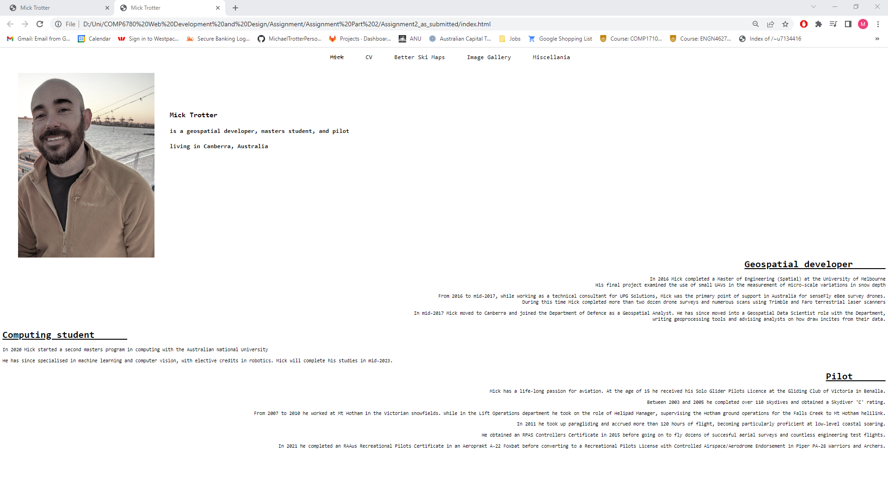
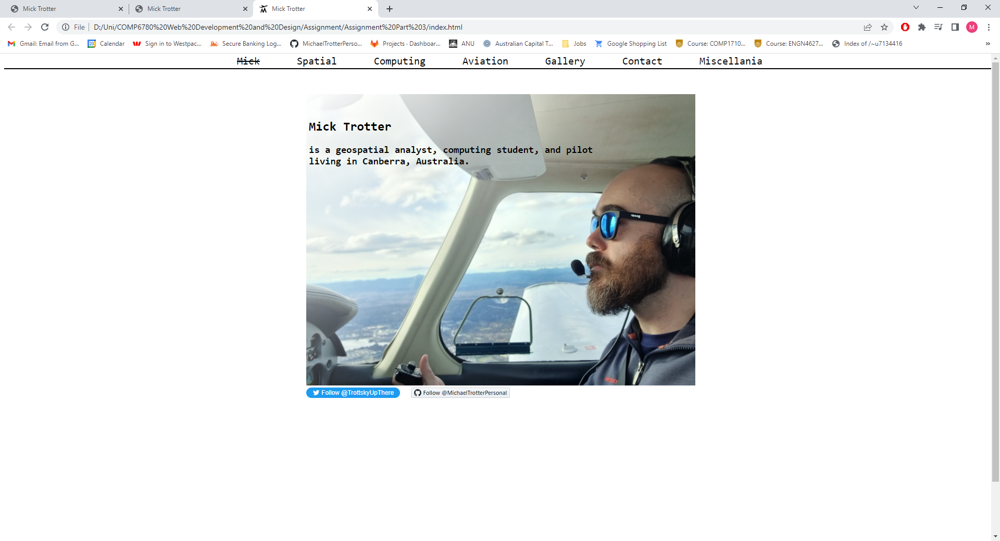
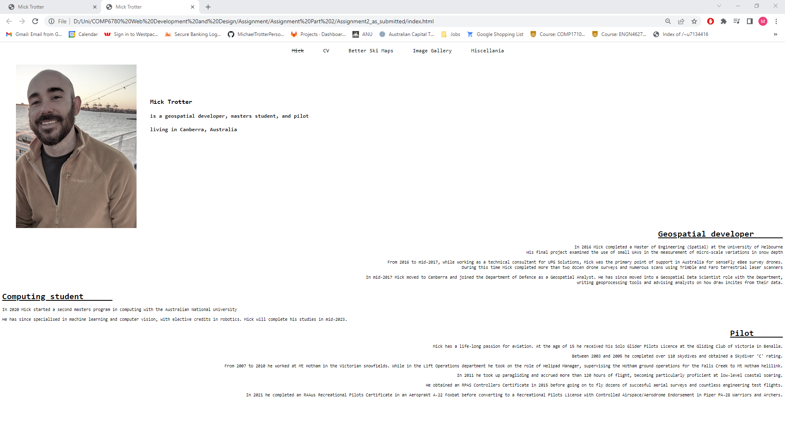
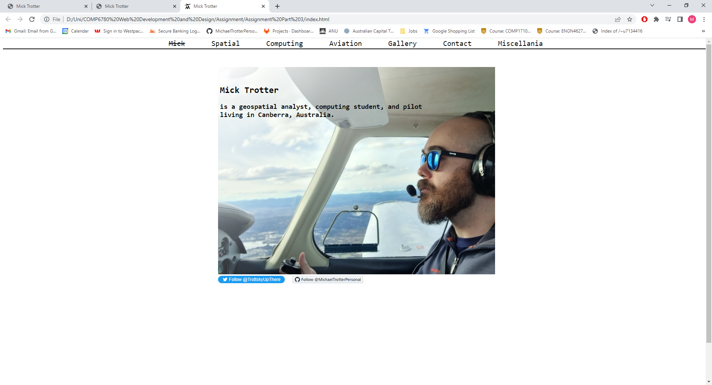

About
Coming to this course I had several years' experience in coding, but no experience in front-end development. I had spent very little time considering UI design beyond my personal preferences. My growth in this area is obvious when viewing the iterations of my front page (below).
My assignment 1 and 2 index.html submissions were very different, but both had the same shortcoming in that their message was not succinctly communicated. Learning to cut back on unnecessary textual and graphic content has been critical.
However, there are always challenges. Design compromises must be made, and a balance must be struck between aesthetics and functionality, minimalism and content. In my final submission I have tried to settle into a clean feel – black print on white paper, straight ruled lines and white space. But a simple aesthetic leaves no where to hide and the devil is in the detail. An unaligned div, a border too thick, a serif too big.
I've come a long way this semester, but I have even further to go. I've spent a lot of hours on this site, but I have rushed through the details. Perhaps I could have saved time if I'd invested more wisely in understanding the finer points of CSS.
Maybe next I'll start again fresh. Maybe this time I'll remember the difference between fixed, relative, and absolute…
 


